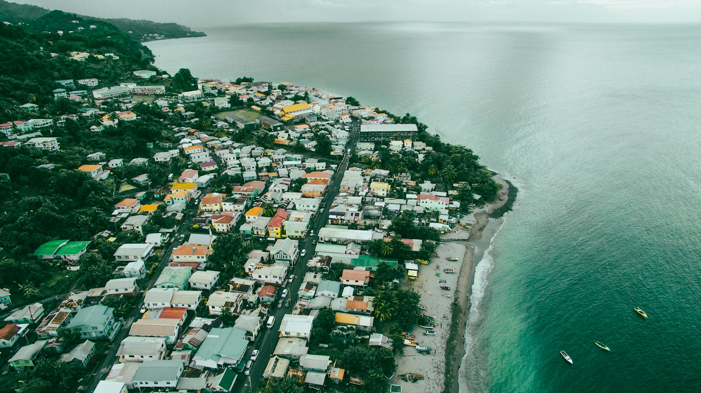
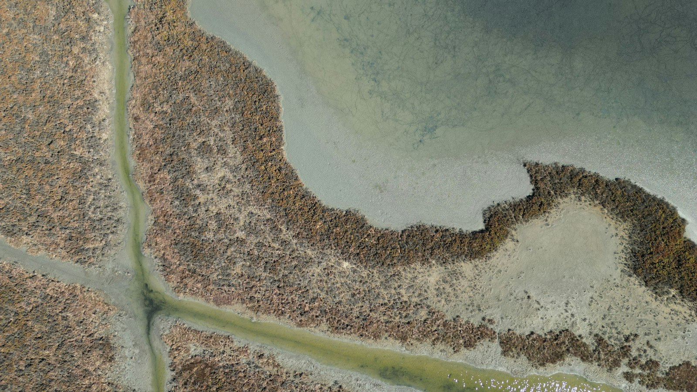
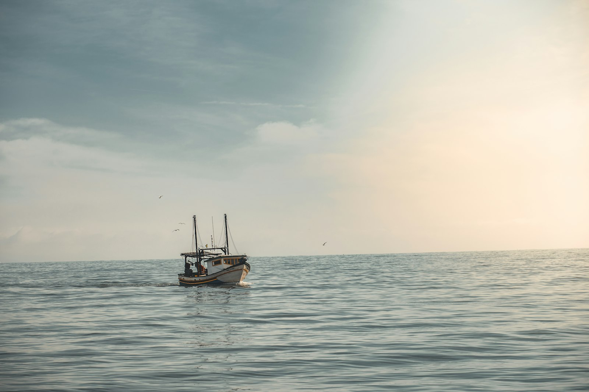
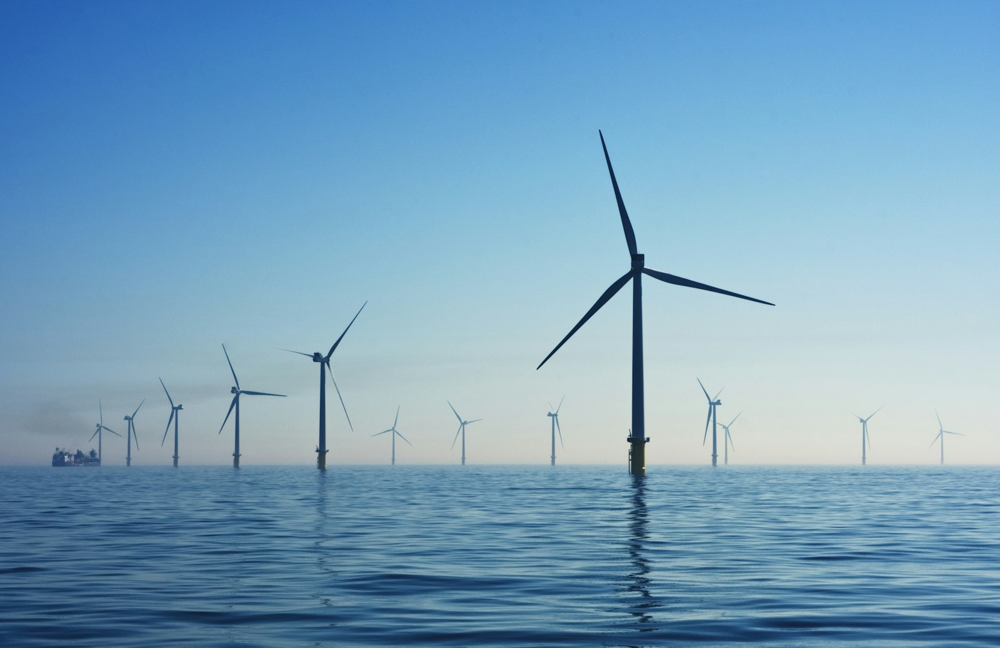
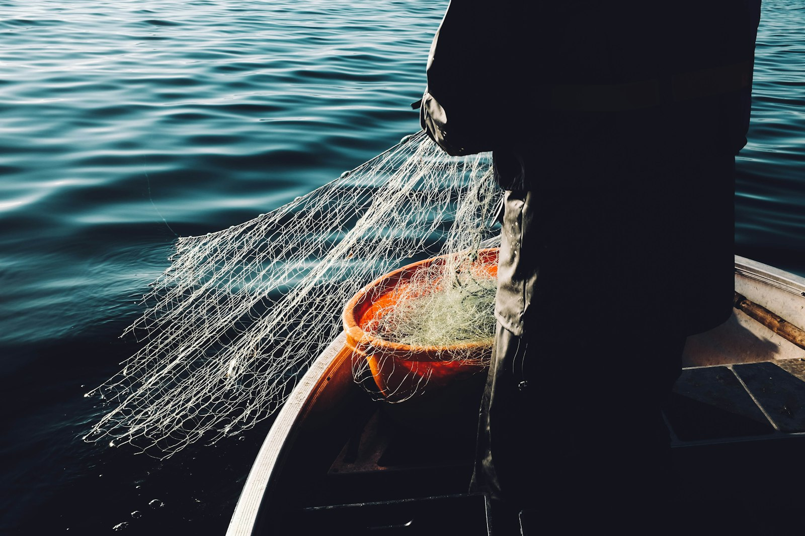
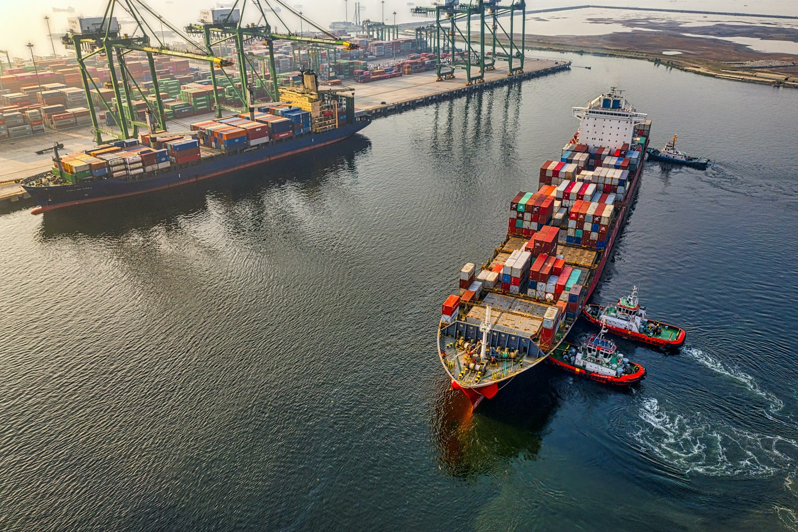
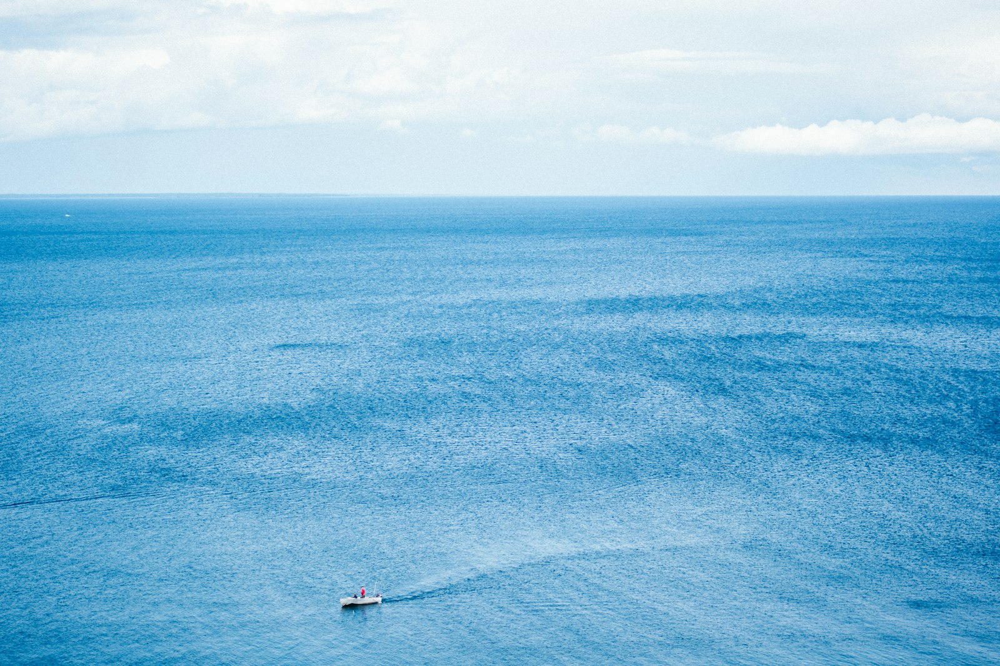

These are the structural drivers underneath every trend on this page: the systems that determine where capital, policy and technology end up pointed.

Roughly two-thirds of marine species, possibly more, have yet to be discovered, with almost 2,000 new species accepted by the scientific community each year. The ocean ecosystem is a distributed and connected source of biodiversity, generating economic value through the design and protection of the supply chain, including fisheries, aquaculture, coastal protection, and carbon storage.
Roughly 90% of global warming is occurring in the ocean, exacting the water's internal heat to increase across almost every measuring depth. Along with ocean heating, we are witnessing higher sea levels, ocean stratification, expansion of depleted oxygen zones, acidification and governance gaps, reaching costs upward of 25% of biodiversity that lives near the coastline.
Coastal areas are highly susceptible to natural and climatic hazards such as sea erosion, saltwater intrusion, coastal aquifers, and coastal flooding due to extreme sea levels, compounded by fluvial flooding and storms. For communities that concentrate in small, coastal and industrial runoffs face a threat multiplier: sewage, chemicals and heavy metals from farming and industrial runoffs threaten water quality and health.

Science and awareness play a central role in fostering the much-needed transition to sustainable ocean use practices. For over 60 million people work in the fisheries and aquaculture sectors worldwide, and diversification of investments across fishing, tourism, energy and new technologies shows businesses are able to bring value in emerging markets.

A total of 84.1 GW of offshore wind capacity across three continents and 19 countries was operated by the end of 2022, accounting for 7.1% of global wind power installation. Offshore wind, tidal and geothermal energy are being repurposed to minimize impacts and maximize outputs, developing sustainable approaches to power technologies still being explored to address the environmental and economic potential of offshore and ocean thermal energy generation.

Consumers are becoming more focused on choosing seafood with health benefits, such as protein, omega-3 fatty acids, vitamin D and selenium. This ocean economy is a distributed and connected source of biodiversity through the design and protection of the supply chain. Efforts to fix the seafood industry need to combine certification programs to produce and distribute standards, alongside traceability and public awareness campaigns.

To meet the IPCC's 1.5°C target it is essential that the international shipping industry moves to decarbonize by 2050 with ambitious targets and Scope 3 accounting. The IMO's GHG strategy, approved through a just transition framework in 2023, is central to how flag states, trade routes and coastal operators plan for greener vessel design, alternative fuels and port infrastructure.

As of 2023, only 24.9% of the global seafloor had been mapped with high-resolution multibeam sonar bathymetry, across a surface area of 360 million square km. Despite the current shortage, a majority of it is low-hanging fruit from satellite data. We need to first map the oceans, well before we can fully understand them.